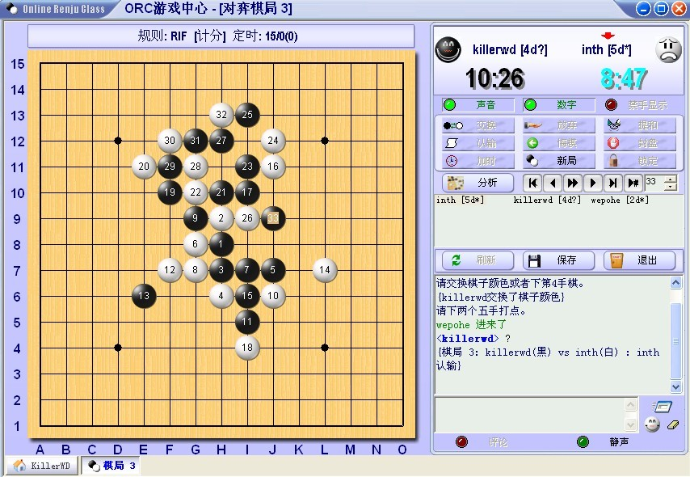

ORC上与inth的一盘棋，黑如何胜？
#1 ORC上与inth的一盘棋，黑如何胜？作者：wd1988 发表时间：2009-11-25 9:13:08
=======上图对应的爱五子棋谱代码如下，以便你拆解：========
h8h9j10i9j8i8i7k9j9j7g10g9f9j11i10h10i11k8k7l9m10k10m8m9k11l6k6i12h13e8
======================================================
黑31下哪里能胜？我执白，被他杀得叹为观止...
［ 茗弈小刀 于 2009-11-25 16:19:15 时花20金币送鲜花一朵］
#2 Re:ORC上与inth的一盘棋，黑如何胜？作者：茗弈妙手 发表时间：2009-11-25 10:04:18
起码我感觉inth强得冒泡……
#3 Re:Re:ORC上与inth的一盘棋，黑如何胜？作者：wd1988 发表时间：2009-11-25 10:22:38

先一局松月砍了他，以为这人好对付。。。我错了，后来这局疏星，真厉害啊。。。我真是井底之蛙，说不定人家第一把是让我的
#4 Re:ORC上与inth的一盘棋，黑如何胜？作者：茗弈妙手 发表时间：2009-11-25 11:14:38
也不至于让吧……我觉得起码在第1盘那一盘中，你可以说是比你的对手强。只不过他在那盘没体现出他的真正的整体实力。#5 Re:ORC上与inth的一盘棋，黑如何胜？作者：茗弈小刀 发表时间：2009-11-25 11:31:20
图一31能杀了吗？#6 Re:Re:ORC上与inth的一盘棋，黑如何胜？作者：wd1988 发表时间：2009-11-25 11:35:55
能。。。真能，因为这局棋是下完了的。。。#7 Re:ORC上与inth的一盘棋，黑如何胜？作者：茗弈妙手 发表时间：2009-11-25 11:55:19
搜对局谱去
#8 Re:ORC上与inth的一盘棋，黑如何胜？作者：wd1988 发表时间：2009-11-25 11:59:34
。。。。。。。。。汗，不准作弊！#9 Re:ORC上与inth的一盘棋，黑如何胜？作者：怪 发表时间：2009-11-25 12:04:56
inth大师天下无敌！~~#10 Re:ORC上与inth的一盘棋，黑如何胜？作者：wd1988 发表时间：2009-11-25 12:56:35
天下无敌不代表不会输......谁也不敢说天下无敌吧？（包括吴镝。。。）
话说到底有没有人给个答案出来呀？
#11 Re:ORC上与inth的一盘棋，黑如何胜？作者：岑小鱼 发表时间：2009-11-26 8:08:02
F13 H5都是很好的点 好象在某个帖子看过。。［ 茗弈小刀 于 2009-11-26 13:49:05 时花20金币送鲜花一朵］